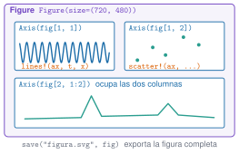

Una figura bien hecha es un resultado; una mal hecha es una fuente de errores. En análisis de vibraciones se dibujan, una y otra vez, dos cosas: series temporales (qué hace la señal en el tiempo) y espectros (qué frecuencias contiene). Esta unidad enseña a hacerlas en Julia con CairoMakie, la biblioteca de las figuras del curso, a combinarlas en paneles y a exportarlas. Como ejemplo se comparan los espectros del edificio de tres plantas en dos estados: el de referencia y uno con daño.
NotaCómo se lee esta unidad
Tiempo orientativo: 90 minutos. Objetivos (4), teoría en cinco píldoras (18), práctica guiada (40), «Pídeselo a Claude» (12), ejercicios (14) y cierre (2). La física de la comparación (por qué baja la frecuencia cuando baja la rigidez) está en M5 y el espectro de Welch, en M3.6.
Objetivos y prerrequisitos
Objetivos. Al terminar esta unidad sabrás:
elegir entre Plots.jl (explorar) y Makie (figuras finales) y por qué el curso usa CairoMakie;
construir una figura con Figure, Axis, lines! y scatter!, y disponer varios paneles en una rejilla;
dibujar una serie temporal y un espectro (con escala logarítmica y picos marcados) con unidades en los ejes;
distinguir curvas sin depender solo del color;
exportar una figura y comprobar que se ha escrito.
Reparto con otras unidades. Aquí se aprende lo básico, suficiente para todas las unidades de J1 y de M. Las figuras de publicación, las interactivas y los temas están en J2.4. Las figuras de mecánica y los esquemas se dibujan con TikZ, no con Makie.
Teoría breve
J1.7.1 Dos bibliotecas, un criterio
En Julia conviven dos familias de gráficos. Plots.jl es la más sencilla: una llamada dibuja la curva, ideal para explorar en el REPL. Makie (con su motor CairoMakie para figuras vectoriales) pide más pasos, pero da control total sobre cada elemento y es la que se usa para todo lo que se publica. En el curso, las figuras de las páginas se hacen con CairoMakie; Plots.jl queda para probar rápido en tu REPL personal (no forma parte del entorno del curso).
# Exploración rápida con Plots.jl (en tu entorno personal):usingPlotsplot(t, x, xlabel="tiempo (s)", ylabel="a (m/s²)")# La misma figura con Makie (la forma del curso):usingCairoMakiefig =Figure()ax =Axis(fig[1, 1], xlabel="tiempo (s)", ylabel="a (m/s²)")lines!(ax, t, x)fig
En el curso, las figuras que se publican en las páginas se hacen con CairoMakie.
Verdadero. CairoMakie produce gráficos vectoriales (SVG o PDF) que se ven bien a cualquier tamaño, y la publicación no necesita nada más.
J1.7.2 Anatomía de una figura
Una figura de Makie tiene tres niveles (Figura 1): la Figure, que es el lienzo; los Axis, que son los paneles con sus ejes, y los gráficos (lines!, scatter!, barplot!, heatmap!…) que se dibujan dentro de un eje. El signo de exclamación indica que la función modifica el eje que se le pasa. Los paneles se colocan con índices de rejilla: fig[fila, columna], y un panel puede ocupar varias columnas (fig[2, 1:2]).

Figura 1: Estructura de una figura de Makie. La figura contiene ejes colocados en una rejilla (fig[1, 1], fig[1, 2], fig[2, 1:2]), y los gráficos se añaden a un eje con funciones que terminan en !. La figura completa se guarda con save.
TipChuleta: Makie
fig =Figure(size=(720, 400)) # lienzo en píxelesax =Axis(fig[1, 1], xlabel="t (s)", ylabel="a (m/s²)", title="...")lines!(ax, x, y, color=:steelblue, label="serie") # líneascatter!(ax, x, y, markersize=9) # puntosbarplot!(ax, x, y) # barrasaxislegend(ax, position=:rt) # leyendasave("figura.svg", fig) # exporta (svg, pdf o png)
J1.7.3 Series temporales
Una serie temporal se dibuja con el tiempo en el eje horizontal y en segundos, y la magnitud con sus unidades en el vertical. Dos errores muy frecuentes: dibujar frente al índice de la muestra (que no dice nada sobre la duración) y dibujar un registro entero de 600 s, donde solo se ve una mancha. Se recorta la ventana de interés (t[1:n]) o se limitan los ejes (xlims!), y cuando se superponen varias series, cada una lleva su etiqueta en la leyenda.
Para dibujar los primeros 10 s de un registro a 100 Hz, ¿cuántas muestras hay que tomar?
\(10\cdot100=1000\) muestras (x[1:1000]).
J1.7.4 Espectros
El espectro, o más exactamente la densidad espectral de potencia (PSD), dice qué cantidad de energía hay a cada frecuencia y se calcula con psd_welch de Resonancia.jl (el método se explica en M3.6). Se dibuja frente a la frecuencia en Hz, con el eje vertical en escala logarítmica (yscale=log10) porque los picos y el ruido de fondo difieren en órdenes de magnitud, y con los picos marcados. buscar_picos devuelve los índices de los máximos locales más altos de un intervalo.
AdvertenciaErrores frecuentes
Un espectro sin escala logarítmica oculta todo salvo el pico más alto. Un espectro sin unidades ((m/s²)²/Hz) no se puede comparar con el de otro sensor. Y un eje de frecuencias que llega hasta Nyquist cuando lo interesante está por debajo de 10 Hz desperdicia el 80 % de la figura: se limita con xlims!(ax, 0, 10).
J1.7.5 Paneles, comparación y exportación
Cuando se comparan dos curvas en el mismo panel, no basta el color: un lector daltónico, o una impresión en blanco y negro, las confunde. Se añade un segundo canal: distinto trazo (linestyle=:dash) o distinto marcador. Para exportar, save("nombre.svg", fig) escribe la figura completa (también PDF o PNG con px_per_unit para la resolución). En las páginas del curso la figura se pone en el documento y no se guarda a mano.
NotaIdea clave
Toda figura del curso lleva: ejes con magnitud y unidades, pie que dice qué se ve y qué conclusión se saca, texto alternativo para quien no la ve, y no depende solo del color.
Tienes dos espectros en un mismo panel, uno azul y otro naranja. Di dos cambios para que sigan distinguiéndose en una impresión en blanco y negro.
Propone cambiar el estilo de línea (continua y discontinua) en una de ellas.
Propone marcadores distintos, grosores distintos o etiquetas directas sobre las curvas.
Práctica guiada
Vamos a dibujar el registro de la planta 3 del edificio y su espectro, y a compararlo con el de un edificio con daño: el entrepiso 2 pierde un 10 % de rigidez (escenario C). Las dos series proceden de datos/sinteticos/edificio-3-plantas/.
Paso 1. Leer y calcular los espectros. La planta 3 es la que más se mueve en todos los modos. La resolución del espectro es \(f_s/n_{seg}=100/4096\approx0{,}024\) Hz.
Los picos primero y tercero del estado dañado bajan (un 2,2 % y un 3,3 %), más que la resolución del espectro (0,6 % a 4,4 Hz): al perder rigidez, bajan las frecuencias. El segundo apenas cambia: el modelo predice una variación de solo −0,25 %, menos que un intervalo de frecuencia, y en un espectro estimado el máximo puede caer en el intervalo vecino (aquí sube un intervalo, +0,8 %). Un cambio menor que la resolución no se puede interpretar: es una lección que se desarrolla en M7.
Figura 2: Registro y espectro de la planta 3 del edificio. Arriba, los 10 primeros segundos de aceleración del estado de referencia (izquierda) y su espectro con los tres picos marcados (derecha). Abajo, comparación de los espectros de referencia (línea continua azul) y con daño (línea discontinua naranja) entre 0 y 6 Hz.
Paso 3. Exportar y comprobar. Se guarda la figura en una carpeta temporal (en las páginas no hace falta, porque Quarto la incluye sola) y se comprueba que el fichero existe y no está vacío.
La versión equivalente con matplotlib y scipy.signal.welch, probada con pytest, está en python/graficos.py. Los picos de la prueba coinciden con los de Julia hasta el último decimal (misma ventana de Hann, mismo solape y misma escala).
Diferencias de enfoque: matplotlib trabaja con el objeto de eje (ax.plot, ax.semilogy) y no con funciones con !; el equivalente de fig[2, 1:2] es plt.subplot_mosaic o gridspec.
NotaQué se ha conseguido
Una figura de cuatro elementos con series, espectros en escala logarítmica, picos marcados, curvas distinguibles sin color, unidades en los ejes y exportación comprobada. Y un primer resultado físico: el daño se ve como un descenso de algunas frecuencias propias, siempre que sea mayor que la resolución del espectro, que es el hilo de toda la vía M.
«Pídeselo a Claude»
TipPrompt
«Con Julia, --project=. y CairoMakie: lee datos/sinteticos/edificio-3-plantas/escenario_A.csv y escenario_C.csv (separador ;, 100 Hz). Calcula con psd_welch de Resonancia.jl (nseg=4096) el espectro de a3_ms2 en los dos escenarios y dibuja en una sola figura: arriba los 10 primeros segundos del escenario A, y abajo los dos espectros superpuestos entre 0 y 6 Hz, en escala logarítmica, con un estilo de línea distinto en cada uno y los ejes con unidades. Dime las frecuencias de los tres picos de cada escenario con buscar_picos. Guarda la figura en una carpeta temporal, no en datos/. No inventes valores: si algo no sale, dilo.»
Verifica. (a) Que los picos del escenario A son 1,099, 2,930 y 4,395 Hz y los del C, 1,074, 2,954 y 4,248 Hz. (b) Que el eje horizontal del registro está en segundos (0 a 10 s, no en índices). (c) Que los ejes llevan unidades y que el espectro está en escala logarítmica. (d) Que las dos curvas se distinguen también en blanco y negro (linestyle). (e) Que no ha escrito la figura en el repositorio ni modificado los CSV.
Ejercicios
¿En qué frecuencia está el tercer pico del espectro de la planta 3 en el estado de referencia?
En 4,395 Hz (4,39453 Hz con la resolución de 0,0244 Hz), muy cerca de los 4,390 Hz del modelo.
¿Cuál es la resolución en frecuencia de un espectro de Welch con segmentos de 4096 muestras a 100 Hz?
\(f_s/n_{seg}=100/4096\approx0{,}0244\) Hz.
Un espectro suele dibujarse con el eje vertical en escala logarítmica porque los picos y el ruido de fondo pueden diferir en varios órdenes de magnitud.
Verdadero. En escala lineal solo se vería el pico más alto; en logarítmica se ven todos los picos y el nivel de ruido.
Escribe el pie de figura de la comparación de espectros de la práctica en dos frases: qué se ve y qué conclusión se saca.
Dice qué se representa (espectros de la planta 3, referencia frente a daño) con sus unidades.
Concluye que las frecuencias de los modos 1 y 3 bajan con la pérdida de rigidez, sin exagerar (el modo 2 no cambia de forma apreciable).
La doy por superada si…
Sé por qué el curso usa CairoMakie y para qué uso Plots.jl.
Construyo una figura con Figure, Axis, lines! y scatter! y varios paneles en rejilla.
Dibujo una serie temporal en segundos y un espectro en escala logarítmica con picos y unidades.
Distingo dos curvas sin depender solo del color.
Exporto una figura y compruebo que existe.
Cierre. Escribe tres líneas: qué he entendido, qué todavía no domino y cuál es mi siguiente paso pequeño. Revisa con git diff lo que haya escrito Claude.